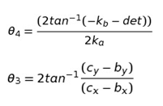

Objective
After completing the experiments on Tchebichev’s Lambda Mechanism
- Students will be able to understand the application of four bar mechanism is walking mechanism
Prerequisites
Please go through the theory of the kinematic analysis of the four bar linkage before attempting this experiment
Theory
The Tchebyshev's Lambda Mechanism is a four-bar mechanism that converts rotational motion to approximate straight-line motion with approximate constant velocity. The precise design trades off straightness, lack of acceleration, and the proportion of the driving rotation that is spent in the linear portion of the full curve.
The Tchebyshev's Lambda Mechanism is a cognate linkage of the Tchebyshev linkage.
The linkage was first shown in Paris on the Exposition Universelle (1878) as "The Plantigrade Machine".
The Tchebyshev's Lambda Mechanism looks like the Greek letter lambda, therefore the linkage is also known as Lambda Mechanism.
R1, R2,R3,R4 are lengths of link OQ, link OB, link BD and link CQ respectively
R1=R2÷2
R3=2.5×R2
R4=2.5×R2
k=(R22-R32+R42+R12)÷2
ka=k-R2(R1-R4)cos(BOQ)-(R4R1)
kb=-2R2(R4)sin(BOQ)
kc=k-R2(R1+R4)cos(BOQ)-(R4R1)
det=kb2-4kakc

Positions are found using the angles above with the given link lengths

- OQ is the varied to increase stroke length
- The trace check box is used to trace the path followed by the leg
- Speed of walking can be increased by increasing the input angular velocity
Simulation:
- In this page the link lengths can be varied proportionally by increasing OQ
- The Path traced by the leg can be checked by checking the Trace option
- The simulation has two modes
- Pause Mode
- Run Mode
In this mode the simulation is made to behave in such a way that the user inputs the input angle. In the screenshot displayed above the simulation is paused and the user can vary alpha values accordingly as per his/her wish
In this mode the simulation is made to behave in such a way that the user inputs the angular velocity of the four bar linkage.
Overall this screen of the simulation is used figure out the application of the four bar mechanism as a walking mechanism


- Prove that the mid point of the shortest link in Tchebichev linkage moves in approximate straight line. Also find the input angles between which it does so.


-
Robert L Norton (2011), Design of Machinery (5th Ed.), McGraw Hill Publication
Uicker J.J., Pennock G.R. and Shigley J.E. (2009), Theory of Machines and Mechanisms (3rd Ed.), Oxford University Press
S S Rattan (2014), Theory of Machines (4th Ed.), McGraw Hill Education (India) Private Limited